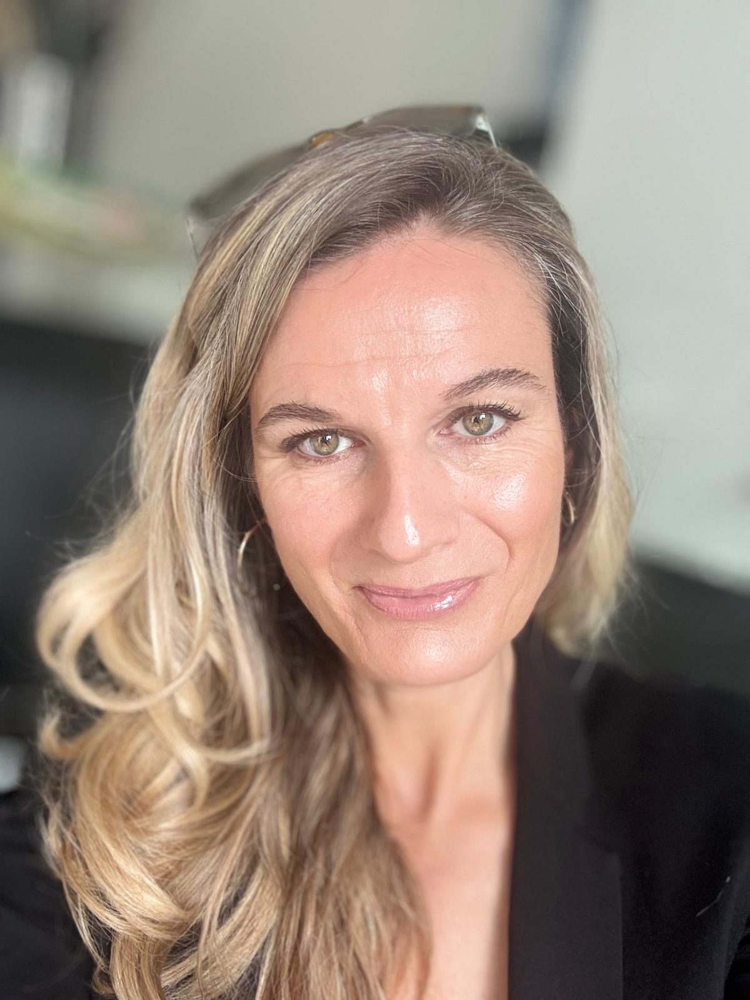

What I do?
Maison Jené is a premium, global energetic practice dedicated to restoring harmony, clarity, and cellular emotional release across elite estates, equine partnerships, and domestic animals. Founded by Creative Director and Energy Practitioner Jennie Wassall-Jamieson, the Maison bridges ancient ancestral lineage healing with deep intuitive mediumship to calm nervous systems and realign stagnant energy fields. Operating as a freelance global mobile atelier based out of Amsterdam, Maison Jené offers bespoke, highly confidential sessions tailored for discerning clientele, competitive equestrians, and private homeowners worldwide. From soul-to-soul equine mediumship to whole-estate property harmonization, every placement is handled with absolute discretion, profound accuracy, and an unwavering commitment to sanctuary-level peace. Strictly confidential; NDAs welcome.
Get in touch